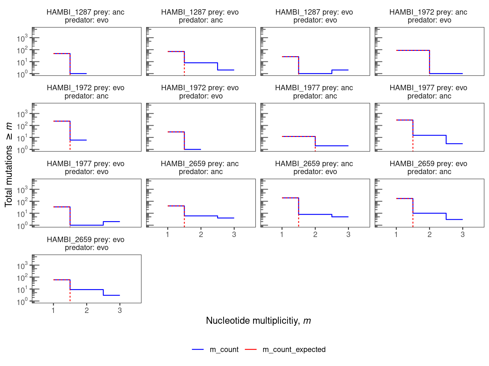

Metagenome genetic parallelism
1 Setup
Libraries and global variables
Set up some directories
2 Read data
Show/hide code
# these were already filtered in the last step
mgvars <- read_tsv(here::here(data, "metagenome_variant_timeseries.tsv"))
degentab <- read_rds(here::here(shared, "annotations_codon_degeneracy.rds"))
genome_len <- read_tsv(here::here(shared, "HAMBI_genome_len.tsv"))
# annotations
annotations <- read_rds(here::here(shared, "annotations_codon_degeneracy.rds"))3 Parallelism at nucleotide level
Show/hide code
# exclude fixed variants from day 0
tofilter <- mgvars %>%
filter(time_days == 0) %>%
filter(freq_alt_complete == 1) %>%
dplyr::select(chrom, pos, ref, alt) %>%
distinct()
# mobile regions have already been masked in the data wrangling step
mgvars_filt_mb <- anti_join(mgvars, tofilter, by = join_by(chrom, pos, ref, alt)) %>%
# exclude variants that were added to make complete time course
filter(!is.na(freq_alt_complete)) %>%
filter(freq_alt_complete > 0) %>%
filter(time_days != 0)Looking at all mutations (inside and outside of coding sequences, synonymous and nonsynonymous)
Show/hide code
We identified 13 species \(\times\) treatment combinations with detectable mutations. To put these observations in context, we can compare them to a simple null model in which mutations are uniformly distributed across the sites in the genome. We can then check how many sites with 1, 2, and 3-fold multiplicity that we would expect by chance. We define nucleotide parallelism as the number of mutations occurring at the same site in the genome in independent populations for a given species \(\times\) treatment combination. For each site, we define the multiplicity, \(m_{i}\), as the number of populations (i.e., replicates) with a mutation detected at that site, so that the multiplicity in this experiment can range from one to three.
The expected number of mutations with \(m_{i} \geq m\) in a sample of total mutations size \(n_{tot}\) is:
\[ S(m) \approx \sum_{n \geq m} \frac{n}{n_{tot}} \cdot L_{tot} \cdot \frac{ \left( \frac{n_{tot}}{L_{tot}} \right) ^n}{n!} e^{-n_{tot}/L_{tot}} \]
where \(L_{tot}\) is the total number of bases in the genome.
3.1 Nucleotide parallelism by treatment
Here we will do the estimation separately for each species \(\times\) treatment combination.
Show/hide code
nuc_survival <- mgvars_filt_mb %>%
dplyr::select(strainID, prey_history, predator_history, pos, ref, alt, replicate) %>%
# multiplicity = number of replicate populations each unique mutation is
# observed in
summarize(m = n_distinct(replicate), .by = c(strainID, prey_history, predator_history, pos, ref, alt)) %>%
# now calculate the total number of mutations across all replicates so we need
# to ungroup by mutation position/alt allele but because we still want to
# determine this value by treatment category we keep the treatment category
# grouping. However, this should be changed if you want to for example average
# over all the treatment conditions on a species basis
group_by(strainID, prey_history, predator_history) %>%
count(m, name = "m_count") %>%
mutate(n = m * m_count,
Ntot = sum(n),
perc = n / Ntot * 100) %>%
left_join(genome_len, by = join_by(strainID)) %>%
arrange(cur_group_id(), desc(m)) %>%
# dpois() tells the probability mass at a given number of counts. Here we
# want to get the probability of observing n mutations with multiplicity
# = mi (i.e. the counts of mi in the observed data). We assume that
# mutations independently occur on the genome of size Ltot at a rate of
# lambda = Ntot/Ltot and that generally the events are rare. Thus this
# situation can be modeled by the Poisson distribution. We can get the
# binned number of mutations per level of multiplicity m by multiplying
# the probability by the length of the genome and the binned mutations
# divided by the total number of mutations.
mutate(m_count_expected = cumsum((m_count / Ntot) *
total_len *
dpois(m, lambda = Ntot / total_len))) %>%
dplyr::select(-num_contigs) %>%
relocate(m, n, Ntot, perc, m_count, m_count_expected) %>%
ungroup()
# setup for plotting
nuc_survival_plot <- nuc_survival %>%
group_by(strainID, prey_history, predator_history) %>%
# when there is only one multiplicity observed for a mutation filter such
# that the multiplicty of that mutation must be greater than one.
# Otherwise include all remaining mutations (m > 0)
filter(case_when(n() == 1 ~ m > 1,
TRUE ~ m > 0)) %>%
pivot_longer(cols = c("m_count", "m_count_expected")) %>%
mutate(label = paste(strainID, "prey:", prey_history, "\npredator:", predator_history)) %>%
# and make final plot
plot_nuc_survival(., 5000, c(1, 10, 100, 1000, 10000), 4)
3.2 Conclusion
Nucleotide parallelism results are presented in Figure Figure 1. For these species and evolution treatments this very simple null model mostly predicts that we should expect fewer than two parallel mutations (same position, same alternative allele) across the three replicate populations. For 8 species \(times\) treatment combinations the observed data show an excess of nucleotide parallelism relative to this simple null expectation. In particular all species have at least 1 mutation that is identical across all three replicate evolved populations. HAMBI_1287, HAMBI_1972, and HAMBI_2659 did evolve some new parallel nucleotide mutation de novo in the ancestral prey treatment. These will be interesting to follow up on. Still, multi-hit sites constitute only a small fraction of the total observed mutations across all species (~ 14% across species with multi-hit sites). Thus, we will continue our analysis but looking at the gene level.
4 Parallelism at gene level
If selection pressures and mutation rates did not vary between genes, the number of mutations in each gene should be proportional to the target gene size. We assume that gene length is a primary driver of the target size. We then define a multiplicity for each gene according to:
\[m_{i} = n_{i} \cdot \frac{\overline{L}}{L_{i}} \tag{1}\]
where \(n_{i}\) is the number of nonsynonymous mutations (i.e., amino acid changing) in \(gene_{i}\) across all replicate populations per species, \(L_{i}\) is the total number of nonsynonymous sites (i.e., excluding 4-fold degenerate sites) in \(gene_{i}\), and \(\overline{L}\) is the average value of \(L_{i}\) across all genes in the genome. This definition ensures that under the null hypothesis, all genes have the same expected multiplicity \(\overline{m} = n_{tot}/n_{genes}\).
We next define a null model for gene multiplicity that assumes mutations are assigned to genes with probability:
\[p_{i} \propto L_{i} r_{i} \tag{2}\]
for some set of enrichment factors \(r_{i}\). In the alternate model, the maximum likelihood estimator of the enrichment factors \(r_{i}\) is the ratio of observed to expected gene multiplicities, \(r_{i} = m_{i}/\overline{m}\). The net increase of the log-likelihood relative to the null model (\(r_{i} = 1\)) is then given by:
\[\Delta \ell = \sum_{i} n_{i} \log \left ( \frac{m_{i}}{\overline{m}} \right ) \tag{3}\]
This likelihood ratio estimator is equivalent to the total G-score introduced in earlier work (Tenaillon et al. 2016). Here we assess statistical significance using permutation tests following Shoemaker et al. (Shoemaker et al. 2021). For permutations tests (n = 10,000) we randomly resample mutations to the observed \(n_{tot}\) set size from each species using the multinomial distribution, where the probability of sampling a non-synonymous mutation at \(gene_{i}\) was given by \(p_{i} = {L_{i}} / {L_{tot}}\) where \(L_{i}\) is the total number of nonsynonymous sites in \(gene_{i}\) and \(L_{tot}\) is the total number of nonsynonymous sites in the genome.
We next identify specific genes enriched for mutations following the criteria of Good et. al . (Good et al. 2017). We calculate a value for each gene using the equation:
\[P_{i} = \sum_{n \geq n_{i}} \frac{ \left ( \frac{n_{tot} L_{i}}{ \overline{L} N_{genes}} \right )^{n}}{n!} e^{- \frac{n_{tot} L_{i} }{\overline{L} N_{genes}}} \tag{4}\]
Here we only consider genes with \(n_{i} \geq 3\) to exclude low values driven primarily by gene length. Under the null hypothesis, the expected number of genes with \(P_{i} \geq p\) can be found using a Poisson survival curve given by:
\[\overline{N}(P) \approx \sum_{i=1}^{N_{genes}} \sum_{n=3}^{\infty} \theta (P - P_{i}(n, L_{i}) \cdot \frac{ \left( \frac{n_{tot} L_{i}}{\overline{L} N_{genes}} \right)^{n}}{n!} e^{-\left( \frac{n_{tot} L_{i}}{\overline{L} N_{genes}} \right)} \tag{5}\]
We can compare this expected number to the observed number of genes \(N(P)\) using a critical value (\(P^{\ast}\)) such that
\[\frac{\overline{N}(P^{\ast})}{N(P^{\ast})} \leq \alpha \tag{6}\]
for a given FDR \(\alpha\) value of 0.05. For this value we then define the set of significantly enriched genes as:
\[I = \left\{ i : P_{i} \leq P^{\ast} \left(\alpha \right) \right\} \tag{7}\]
4.1 Prepare input data for non-syn mutations only
Show/hide code
mgvars_filt_mb_ns <- mgvars_filt_mb %>%
# exclude intragenic, intergenic, and synonymous mutations. Also exclude
# fusion functions because these are weird and also rare. Excluding the
# modifier category also ensures that we filter out any tRNAs with mutations
filter(!str_detect(effect, "intergenic|intragenic|synonymous|fusion")) %>%
filter(!str_detect(impact, "MODIFIER")) 4.2 G score
Warning! this takes some time
Show/hide code
muts_by_sp_treat <- mgvars_filt_mb_ns %>%
dplyr::select(-c(freq_alt_complete, time_days)) %>%
group_by(strainID, prey_history, predator_history) %>%
distinct() %>%
mutate(groupid = cur_group_id()) %>%
group_by(groupid, strainID, prey_history, predator_history)
# doing 10000 permutations
result_sp_treat <- run_full_gene_parallelism_pipeline(muts_by_sp_treat, degentab, 10000)
# Save this for later
write_rds(result_sp_treat, here::here(data, "parallelism_results_sp_treat.rds"))4.2.1 Simulating the number of replicates with a parallel gene hit
As another sanity check, we took the resamplings from the null distribution and calculated the number of replicates with a parallel gene hit (i.e. the same gene hit in \(\geq 2\) experimental replicates) and compared that to the observed distribution. The null distribution reflected the process of sampling a mutation under a multinomial distribution with probability proportional to the total number of nonsynonymous sites \(L_{i}\) in \(gene_{i}\). We observed that in 9/16 cases the null distribution produced fewer parallel gene hits than observed in the data from 2 experimental replicates. In all 16 cases the null distribution produced fewer parallel gene hits than observed in the data from 3 experimental replicates. Thus, for some suspicious genes with very high mutational density (see below) we required these genes to be present in all three replicates to include them in our final significant gene lists.
4.2.2 Visualize the survival curves for each treatment combination
Show/hide code
survcurv <- result_sp_treat$output_df2plot %>%
filter(!is.na(xend)) %>%
mutate(label = paste(strainID, "prey:", prey_history, "\npredator:", predator_history)) %>%
ggplot() +
geom_segment(
aes(
x = x,
y = y,
xend = xend,
yend = yend
),
linetype = "dashed",
linewidth = 0.25, color = "red"
) +
geom_step( aes(x = obs_p, y = value, color = name)) +
facet_wrap(~ label, ncol = 4) +
labs(x = TeX("$-log_{10}P$"), y = "Number of genes") +
scale_color_manual(values = c("blue", "grey50")) +
scale_y_log10(
breaks = c(1, 10, 100),
labels = scales::trans_format("log10", scales::math_format(10 ^.x))
) +
annotation_logticks(sides = "l", color = "grey40") +
coord_cartesian(ylim = c(1, 200)) +
theme_bw() +
theme(
strip.background = element_blank(),
panel.grid = element_blank(),
legend.position = "bottom"
)4.2.3 Overall G scores
4.2.4 Inspecting individual genes
Some genes tend to have a large number of consecutive mutations which is probably due to incorrect read mapping and not real mutations so we will try and filter these out. Well do this by filtering on genes with a mutational density \(d_{g} \gt 0.15\), where the mutational density in gene \(g\) was defined as
\[d_{g} = \frac{|A|_{g}}{b_{g} - a_{g}}\]
for all genome positions \(x\) on the interval \(\{x | a_{g} \leq x \leq b_{g}\}\) where \(b_{g}\) is the greatest position and \(a_{g}\) is the smallest position of observed mutations in gene \(g\) and \(|A|_{g}\) is the cardinality of the mutation set.
Show/hide code
high_density_genes <- mgvars_filt_mb_ns %>%
group_by(strainID, locus_tag, replicate, prey_history, predator_history) %>%
mutate(mutwindox = pos - lag(pos),
mut_num = n(),
mut_dens = n()/(max(pos) - min(pos))) %>%
ungroup() %>%
filter(mut_dens != Inf) %>%
filter(mut_dens > 0.15) %>%
distinct(locus_tag) %>%
pull()Show/hide code
output_gene_table_filt <- result_sp_treat$output_gene_table %>%
# only genes exceeding the critical pstar value from the survival curves above
filter(neg_log10P >= pstar) %>%
# only include genes with at least 3 hits in the same gene or found in more than one replicate.
filter(observed_hits_n_i >= 3 | n_replicate > 1) %>%
# filters out the problematic genes above unless the number of replicates detected is 2 or more
filter(case_when(n_replicate < 2 ~ !(locus_tag %in% high_density_genes),
TRUE ~ n_replicate > 1)) %>%
left_join(annotations, by = join_by(locus_tag, strainID))5 Convergent/divergent evolution
So now we have a list of enriched genes for each condition. We can see that, for example, H0403_00778 occurs in the significant hit lists of multiple conditions. Now we would like to determine whether a significant gene popping up in these multiple conditions happens more than would be expected by chance.
5.1 Jaccard Index for convergence between treatments
We follow the same approach as in (Shoemaker et al. 2021) where we simulate the process of randomly sampling \(n = 100,000\) draws of significant gene set pairs \((I_{i},I_{j})\) from every species \(\times\) treatment pair where the probability of sampling a gene is proportional to its length. We then calculate the Jaccard index
\[J(I_{i},I_{j}) = \left|I_{i} \cap I_{j}\right|/ \left|I_{i} \cup I_{j}\right|\] for each null simulation \(J(I_{i},I_{j})_{null}\) and calculate an empirical \(P\) value for the number of null simulation results exceeding the observed \(J(I_{i},I_{j})_{observed}\) to determine whether the intersection of the set of genes was greater (convergence) or less than (divergence) expected by chance.
5.1.1 HAMBI_1287
5.1.2 HAMBI_1972
5.1.3 HAMBI_1977
5.1.4 HAMBI_2659
5.2 Enrichment of individual COG categories
So now we have a list of enriched genes for each species. We can see that, for example, some gene functions pop up multiple times (like transcription factors and sensory kinases). Are these different functions popping up across species more that we would expect by chance? Well try and test this using a simulation based approach
Show/hide code
cog_description <- tibble::tribble(
~COG_category_single, ~COG_category_long,
"J", "J - Translation, ribosomal structure and biogenesis",
"A", "A - RNA processing and modification",
"K", "K Transcription",
"L", "L - Replication, recombination and repair",
"B", "B - Chromatin structure and dynamics",
"D", "D - Cell cycle control, cell division, chromosome partitioning",
"Y", "Y - Nuclear structure",
"V", "V - Defense mechanisms",
"T", "T - Signal transduction mechanisms",
"M", "M - Cell wall/membrane/envelope biogenesis",
"N", "N - Cell motility",
"Z", "Z Cytoskeleton",
"W", "W - Extracellular structures",
"U", "U - Intracellular trafficking, secretion, and vesicular transport",
"O", "O - Posttranslational modification, protein turnover, chaperones",
"X", "X - Mobilome: prophages, transposons",
"C", "C - Energy production and conversion",
"G", "G - Carbohydrate transport and metabolism",
"E", "E - Amino acid transport and metabolism",
"F", "F - Nucleotide transport and metabolism",
"H", "H - Coenzyme transport and metabolism",
"I", "I - Lipid transport and metabolism",
"P", "P - Inorganic ion transport and metabolism",
"Q", "Q - Secondary metabolites biosynthesis, transport and catabolism",
"R", "R - General function prediction only",
"S", "S - Function unknown"
)save a copy of significantly parallel genes as a table
Show/hide code
Joining with `by = join_by(locus_tag, strainID)`Show/hide code
Calculate the probability of each gene (ns_sites/total_ns_sites) and link to COG categories
5.2.1 Jensen Shannon Divergence
This function draws n genes from each species with a probability proportional to gene length, where n = the number of significant parallel genes observed from the data. We repeat this simulation 10 000 times and below we check if 1) the Jensen Shannon divergence between the distribution of the COG categories drawn randomly and the background (i.e., the distribution of COG categories in the whole genome) is greater than the Jensen Shannon divergence between the background and the observed distribution of COG categories in significantly parallel genes. The idea is that if some COG categories are enriched/depleted in the parallel genes, then the JSD divergence between the observed and the background should be larger than the JSD between the random sampled genes (sampling probability based only on gene length) and the background. We calculate an empirical P value by counting how many times the simulated JSD exceeds the observed.
Show/hide code
gene_nest <- output_gene_table_filt %>%
summarize(nsiggenes = n(), .by = c(strainID, prey_history, predator_history)) %>%
left_join(eggnog_nslen,
by = join_by(strainID),
relationship = "many-to-many") %>%
nest(data = -c(strainID, prey_history, predator_history))
gene_draw <- function(){
gene_nest %>%
mutate(locus_tag = map(
data,
\(x) sample(
x = x$locus_tag,
size = unique(x$nsiggenes),
prob = x$p,
replace = FALSE
)
)) %>%
dplyr::select(-data) %>%
unnest(cols = locus_tag)
}
# take 10 000 random draws of the genes. Use a seed for reproducibility
withr::with_seed(12367,
genes_simulated <- map(1:10000, ~gene_draw(), .progress=TRUE) %>%
list_rbind(names_to = "id"))
# save the output so we don't need to run again
write_rds(genes_simulated, here::here(data, "genes_simulated_nomobile.rds"))Some data formatting
Show/hide code
# read data back
genes_simulated <- read_rds(here::here(data, "genes_simulated_nomobile.rds"))
# map the locus_tags to COG categories for the simulated
# gene draws
COGs_distribution_simulated <- genes_simulated %>%
left_join(eggnog_nslen, by = join_by(strainID, locus_tag)) %>%
group_by(id, strainID, prey_history, predator_history) %>%
count(COG_category_single, name = "nsim") %>%
ungroup()
# get the discrete distribution of COGs in the significant parallel genes
COGs_distribution_observed <- left_join(output_gene_table_filt, eggnog,
by = join_by(locus_tag, strainID)) %>%
group_by(strainID, prey_history, predator_history) %>%
count(COG_category_single, name = "nobs")
# get the discrete distribution of COGs across the whole genome of all species
# this is the null case (i.e. the background that we would expect if there was no
# enrichment)
COGs_distribution_nullexpectation <- eggnog %>%
group_by(strainID) %>%
count(COG_category_single, name = "nnull") Now we calculate the Jensen Shannon divergence between the background and the simulated data to estimate an empirical P value
Show/hide code
# function to calculate the Jensen Shannon divergene of a pair of
# distributions
JSD_pair <- function(p, q){
m <- 0.5 * (p + q)
JS <- 0.5 * (sum(p * log(p/m)) + sum(q * log(q/m)))
return(JS)
}
# Calculate the Jensen Shannon divergence between the COG distribution observed in
# enriched genes and the COG distribution in the genomic background
JSD_observed <- left_join(COGs_distribution_observed, COGs_distribution_nullexpectation,
by = join_by(COG_category_single)) %>%
group_by(prey_history, predator_history) %>%
mutate(p = nobs/sum(nobs),
q = nnull/sum(nnull)) %>%
summarize(JSD = JSD_pair(p, q))Warning in left_join(COGs_distribution_observed, COGs_distribution_nullexpectation, : Detected an unexpected many-to-many relationship between `x` and `y`.
Row 1 of `x` matches multiple rows in `y`.
Row 11 of `y` matches multiple rows in `x`.
If a many-to-many relationship is expected, set `relationship =
"many-to-many"` to silence this warning.`summarise()` has grouped output by 'prey_history'. You can override using the
`.groups` argument.Show/hide code
# now calculate JSD between the simulated draws and the backgound distribution
JSD_simulated <- left_join(COGs_distribution_simulated,
COGs_distribution_nullexpectation,
by = join_by(strainID, COG_category_single)) %>%
# drops from calculation categories that aren't in both the observed data
# and the resampled data. Need to do this because JSD can't handle zero values
drop_na() %>%
group_by(id, strainID, prey_history, predator_history) %>%
mutate(p = nsim/sum(nsim),
q = nnull/sum(nnull)) %>%
summarize(JSD = JSD_pair(p, q))`summarise()` has grouped output by 'id', 'strainID', 'prey_history'. You can
override using the `.groups` argument.Show/hide code
# proportion of JSD measures between simulated and the background that are greater
# than the JSD between the observed and the background
global_p <- left_join(JSD_simulated, JSD_observed, by = join_by(prey_history, predator_history)) %>%
mutate(ngt = JSD.x >= JSD.y) %>%
group_by(strainID, prey_history, predator_history) %>%
summarize(p = sum(ngt)/n())`summarise()` has grouped output by 'strainID', 'prey_history'. You can
override using the `.groups` argument.The overall distribution of COG categories in the parallel genes for each genome in each treatment combination is not significantly different than in the rest of the genome in 9/10 cases. However, for HAMBI_1972 there does seem to be a difference in the distribution of COG categories in enriched genes relative to the genome background.
5.2.2 Enrichment of individual COG categories
OK so the overall distribution of COG categories in the parallel genes is not significantly different than in the rest of the genome - ~40% of the time the JSD between the COG distribution in a random sample and the background is greater than the observed COG distribution and the background.
5.2.2.1 Hypergeometric Test
We can test enrichment in individual COG categories in individual species using the hypergeometric test. We will correct for multiple testings by controlling the False Discovery Rate (FDR) using q-values(Storey and Tibshirani 2003) and choosing a maximum FDR threshold of 5%.
Show/hide code
library(qvalue)
par2test <- left_join(output_gene_table_filt, eggnog,
by = join_by(locus_tag, strainID)) %>%
filter(!is.na(COG_category)) %>%
group_by(strainID, prey_history, predator_history) %>%
count(COG_category_single, name = "n_cog_par") %>%
mutate(n_par = sum(n_cog_par))
back2test <- eggnog %>%
filter(!is.na(COG_category)) %>%
group_by(strainID) %>%
count(COG_category_single, name = "n_cog_background") %>%
mutate(n_background = sum(n_cog_background))
phypres <- left_join(par2test, back2test, by = join_by(strainID, COG_category_single)) %>%
mutate(p_enrich = enricher(n_background, n_par, n_cog_background, n_cog_par, over=TRUE),
p_deplete = enricher(n_background, n_par, n_cog_background, n_cog_par, over=FALSE)) %>%
mutate(p_enrich_adj = p.adjust(p_enrich, method = "fdr"),
p_deplete_adj = p.adjust(p_deplete, method = "fdr"))
qenrich <- qvalue_truncp(phypres$p_enrich)
qdeplete <- qvalue_truncp(phypres$p_deplete)
phypres$q_enrich <- qenrich$qvalues
phypres$q_deplete <- qdeplete$qvalues
phypres %>%
relocate(p_enrich, q_enrich, p_enrich_adj) %>%
arrange(p_enrich)5.2.2.2 Nonparametric simulation
We can also look at different COG categories by simply counting the number of random samplings that have a COG count greater/less than that the observed COG count. Since we resampled the same number of genes as in the observed we can compare the two directly. Below we do this integrated over all species in the community to see if there was any pathway enriched across all species.
Show/hide code
left_join(COGs_distribution_simulated, COGs_distribution_observed,
by = join_by(COG_category_single, strainID, prey_history, predator_history)) %>%
drop_na() %>%
mutate(gt = if_else(nsim >= nobs, 1, 0)) %>%
group_by(COG_category_single, strainID, prey_history, predator_history) %>%
summarize(p = sum(gt)/n()) %>%
arrange(p) %>%
mutate(p_adj = p.adjust(p, method = "fdr"))`summarise()` has grouped output by 'COG_category_single', 'strainID',
'prey_history'. You can override using the `.groups` argument.5.2.3 COG Distribution Plot
Show/hide code
cog_pmut <- left_join(output_gene_table_filt, eggnog,
by = join_by(locus_tag, strainID)) %>%
count(COG_category_single) %>%
mutate(f = n/sum(n),
n = n*1000,
type = "parallel_mutations")
cog_everything <- eggnog %>%
count(COG_category_single) %>%
mutate(f = n/sum(n),
type = "all_genes")
pcogs <- bind_rows(cog_pmut, cog_everything) %>%
drop_na() %>%
ggplot() +
geom_bar(aes(x = fct_reorder(COG_category_single, f, .desc = F), y=n, fill = type), stat="identity",
position = position_dodge( preserve = "total")) +
scale_fill_brewer(palette = "Set1") +
labs(x = "COG Category", y = "Fraction genes in COG category", fill = "Subset") +
scale_y_continuous(
"N all genes",
sec.axis = sec_axis(~ . * 1/1000, name = "N parallel genes")
) +
theme_bw() +
theme(
panel.grid = element_blank(),
panel.background = element_blank(),
legend.position = "bottom"
)5.2.4 Species present in the metagenomes
Show/hide code
# species detected in the metagenomes
mgsp <- c("HAMBI_2659", "HAMBI_1972", "HAMBI_1977", "HAMBI_1287")
cog_pmut_mgsp <- left_join(output_gene_table_filt, eggnog,
by = join_by(locus_tag, strainID)) %>%
filter(strainID %in% mgsp) %>%
group_by(strainID, prey_history, predator_history) %>%
count(COG_category_single, name = "tot") %>%
# scaling factor to make ploting on 2 axes possible
mutate(n = tot*250,
f = n/sum(n),
type = "parallel_mutations")
cog_everything_mgsp <- eggnog %>%
filter(strainID %in% mgsp) %>%
group_by(strainID) %>%
count(COG_category_single) %>%
mutate(f = n/sum(n),
type = "all_genes") %>%
expand_grid(prey_history = c("anc", "evo"), predator_history = c("anc", "evo"))
pcogs_mgsp <- semi_join(cog_everything_mgsp, cog_pmut_mgsp,
by = join_by(strainID, prey_history, predator_history)) %>%
bind_rows(cog_pmut_mgsp) %>%
filter(!is.na(COG_category_single)) %>%
mutate(treat = paste0("prey:", prey_history, " | pred:", predator_history)) %>%
ggplot() +
geom_bar(aes(x = fct_reorder(COG_category_single, n, .desc = F), y=n, fill = type), stat="identity",
position = position_dodge( preserve = "total")) +
scale_fill_brewer(palette = "Set1") +
geom_point(data = tibble(x = c("U", "P", "D", "D", "P", "M"),
y = c(900, 900, 900, 900, 900, 900),
strainID = c("HAMBI_2659", "HAMBI_2659", "HAMBI_1972", "HAMBI_1972", "HAMBI_2659" ,"HAMBI_1972"),
prey_history = c("evo", "evo", "evo", "evo", "evo", "evo"),
predator_history = c("evo", "evo", "anc", "evo", "anc", "evo")),
aes(x = x, y = y), shape = 8) +
facet_grid(treat ~ strainID) +
labs(x = "COG Category", y = "Fraction genes in COG category", fill = "Subset") +
scale_y_continuous(
"N all genes",
sec.axis = sec_axis(~ . * 1/250, name = "N parallel genes")
) +
theme_bw() +
theme(
panel.grid = element_blank(),
strip.background = element_blank(),
panel.background = element_blank(),
legend.position = "bottom"
)| strainID | prey history | predator history | COG category | q value |
|---|---|---|---|---|
| HAMBI_1972 | Evolved | Ancestral | D - Cell cycle control, cell division, chromosome partitioning | 0.019 |
| HAMBI_1972 | Evolved | Evolved | D - Cell cycle control, cell division, chromosome partitioning | 0.026 |
| HAMBI_1972 | Evolved | Evolved | M - Cell wall/membrane/envelope biogenesis | 0.047 |
| HAMBI_2659 | Evolved | Evolved | U - Intracellular trafficking, secretion, and vesicular transport | 0.026 |
| HAMBI_2659 | Evolved | Ancestral | P - Inorganic ion transport and metabolism | 0.037 |
| HAMBI_2659 | Evolved | Evolved | P - Inorganic ion transport and metabolism | 0.037 |